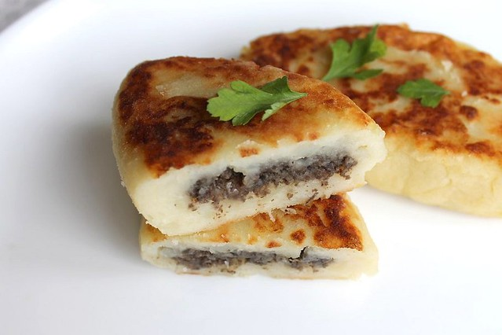

Zrazy is a dish of Lithuanian, Belarusian, Polish and Ukrainian cuisines. Word “zrazy” is of polish origin, it means “slices”, “cut pieces” of something. Despite its Polish name, for the first time the dish is mentioned in the Lithuanian historical records of 14th century. Initially, zrazy were meat chops stuffed with eggs and vegetables. Later on, name zrazy started being used for potato cakes stuffed with mushrooms, meat, vegetables. Potato zrazy with meat is the most popular and nutritious version of this dish. Meat for stuffing you can pick depending on your taste – pork, chicken or lean beef would fit perfectly. Most suitable potatoes for zrazy are the ones which get boiled soft fast.